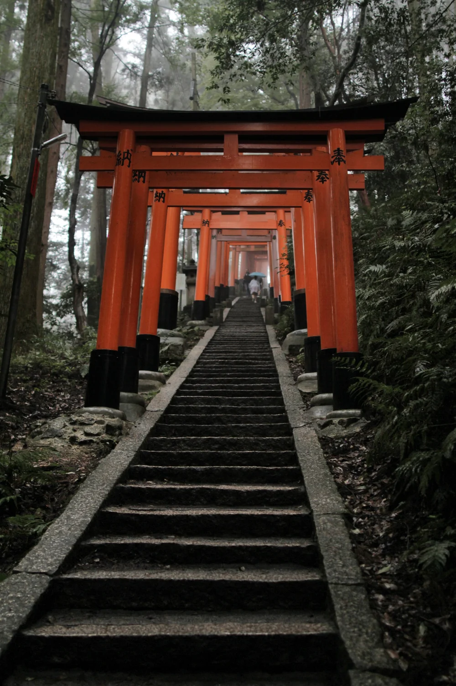
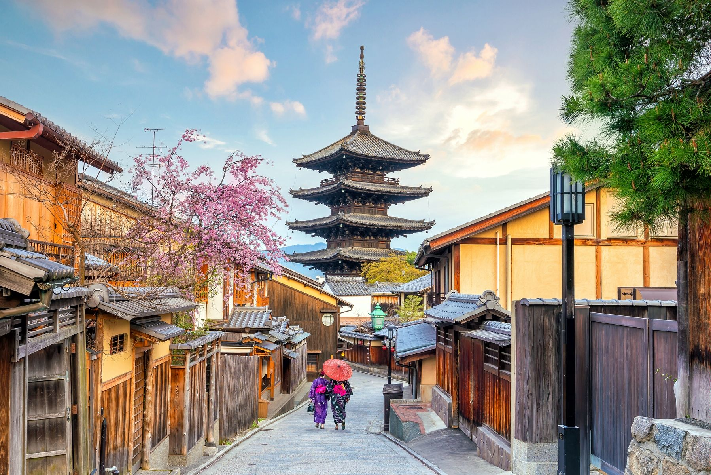
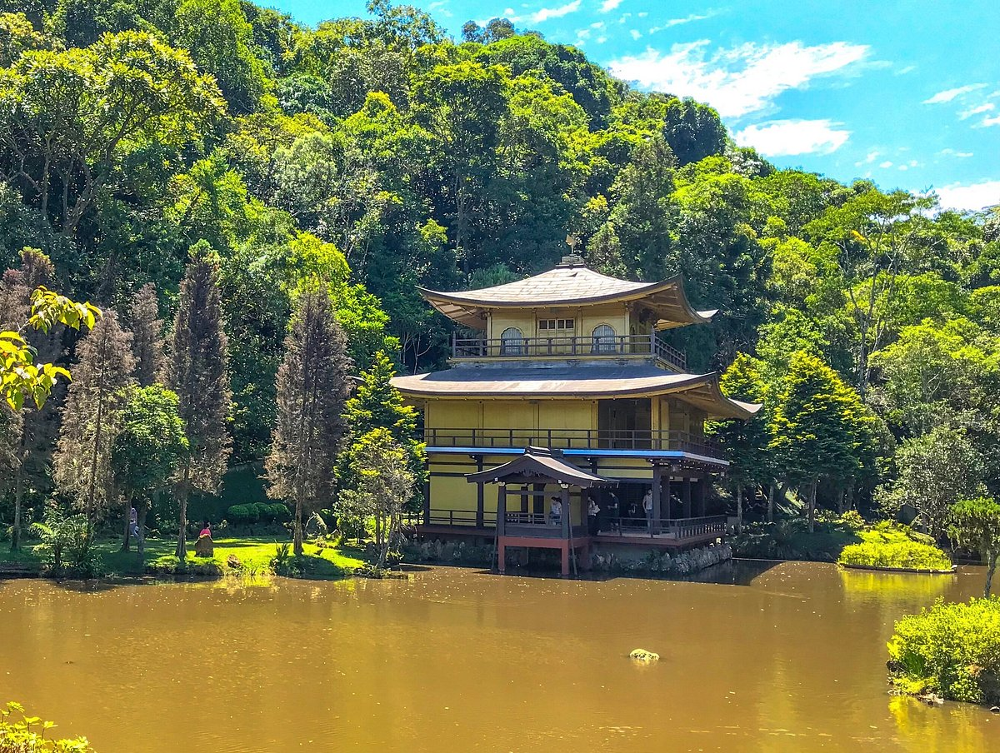
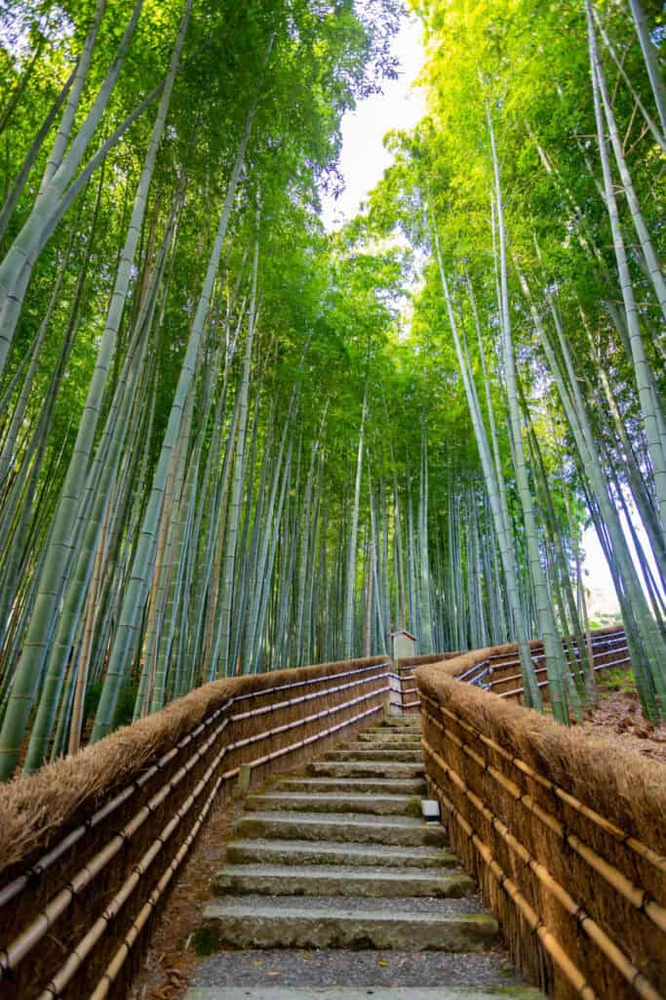
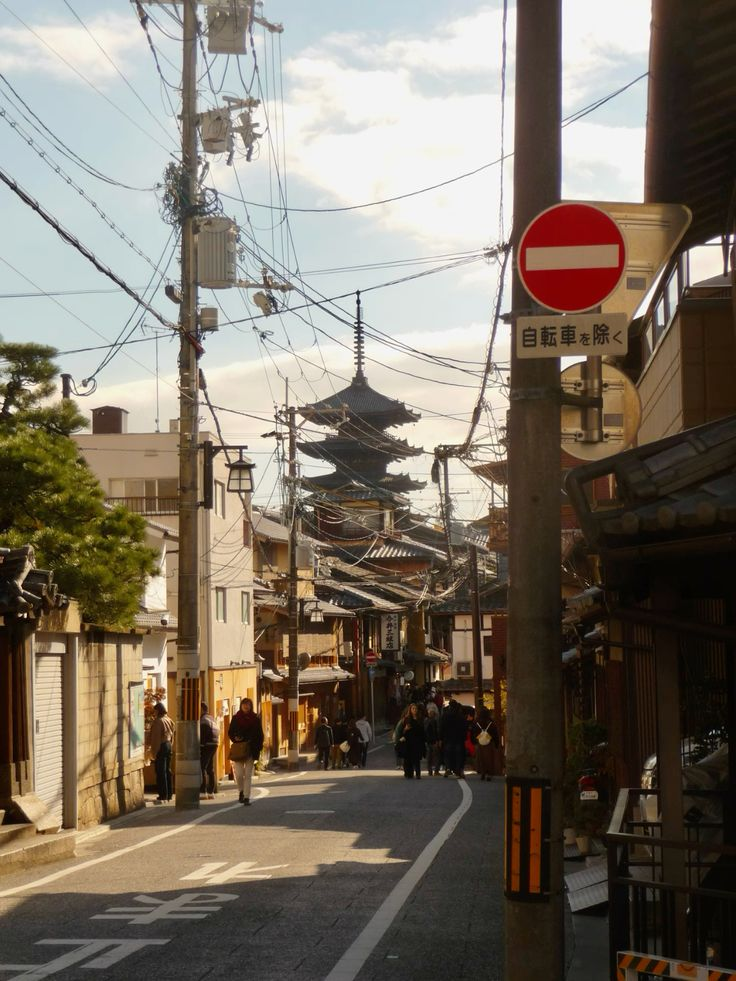
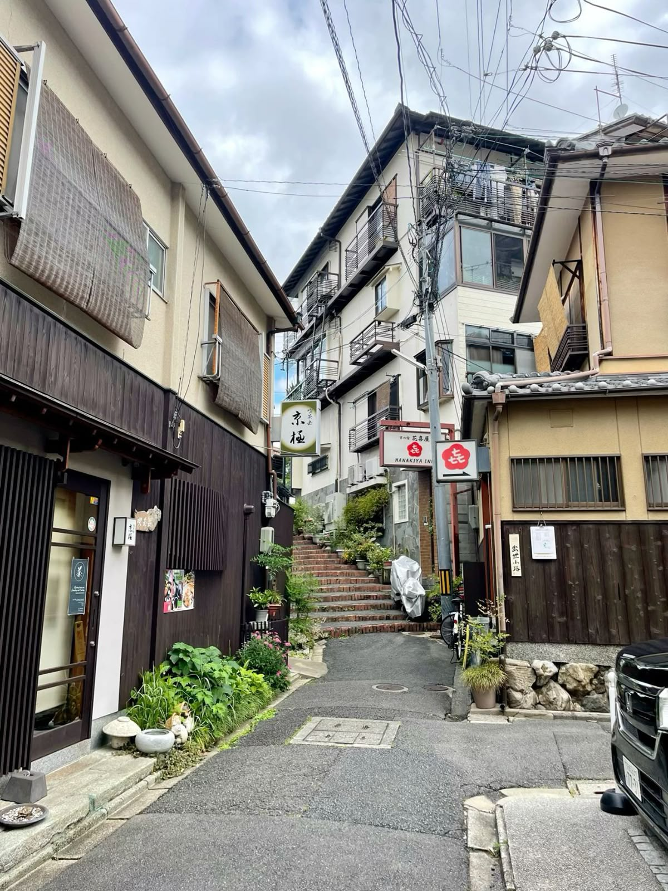
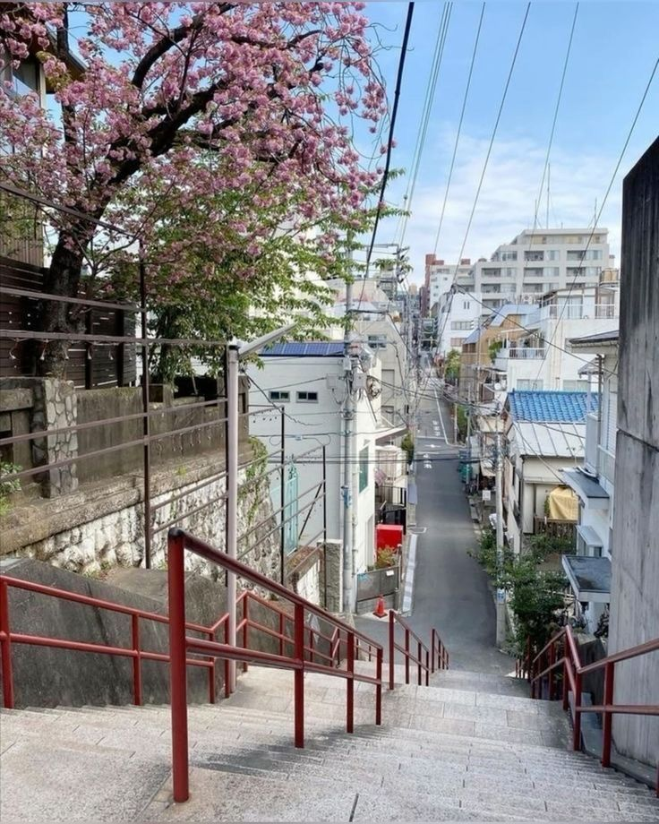
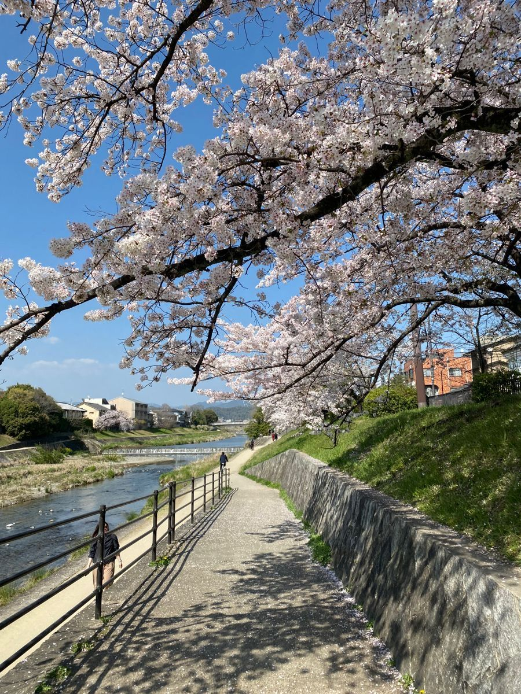
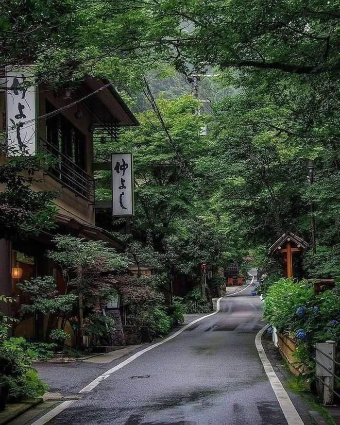

Fushimi Inari Taisha
храм с тысячами красных торий
Киото — один из самых красивых городов Японии, известный храмами, традиционной культурой и спокойной атмосферой.

Киото был столицей Японии более тысячи лет. Город сохранил большое количество исторических зданий, садов, храмов и традиционных районов.
Здесь сочетаются древняя архитектура, спокойные улицы и культурное наследие, которое делает Киото особенным местом.

храм с тысячами красных торий

храм, покрытый золотом

бамбуковый лес
Киото известен традиционными ремёслами, чайными церемониями, кимоно, фестивалями и историческими кварталами.
В городе можно почувствовать атмосферу старой Японии и увидеть, как современные элементы сочетаются с древними традициями.





Email: kyoto@japan.com
Телефон: +81 007 344 1337
Адрес: Kyoto, Japan